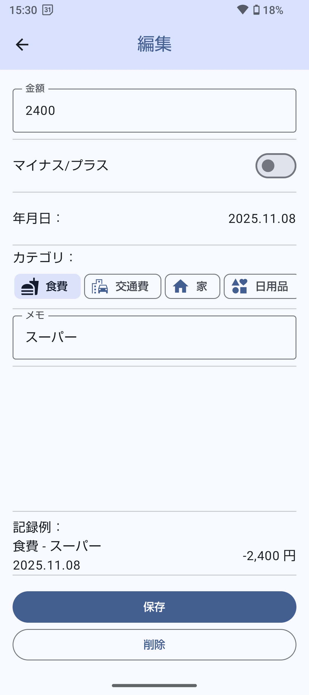
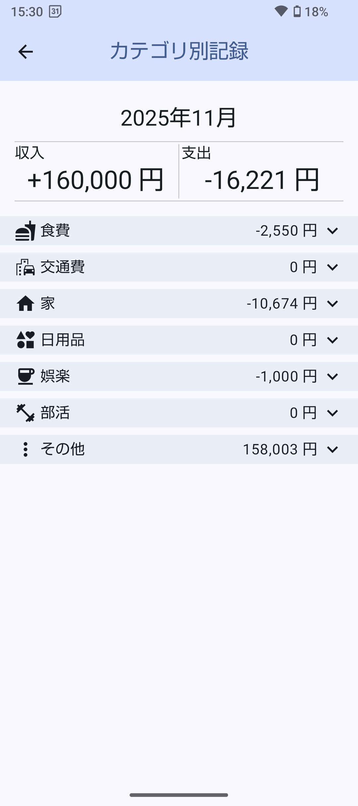
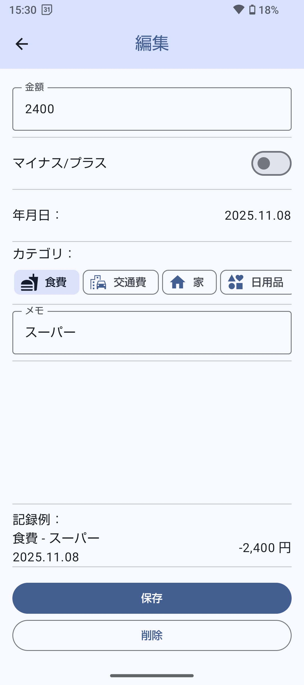
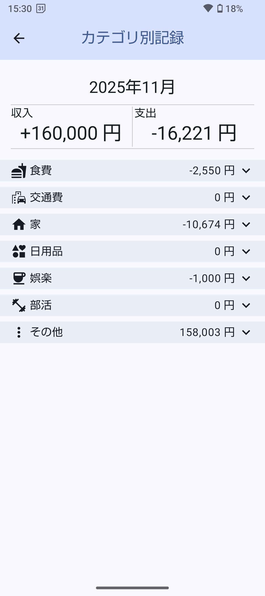

Android Studioでお小遣い帳を作る #01
プロジェクト作成編
2025/10/30 sakura
前書き
大学生活が始まり、お小遣い帳をつけようと思い、またそれを配信したらお小遣い稼ぎにもなるかもとアプリを作ろうとしました。 自分が使っている端末はAndroidなので、Android Studioを使用してお小遣い帳を作り始めました。 プログラミングの知識は昔からUnityでC#を使ってゲームを作ろうとしていたので、多少あり、Android Studioで使うKotlinもAndroid Studio公式チュートリアルも活用しながら学習し、アプリ完成も二か月ほどで終わりました。 Kotlinは少し癖がありましたが、慣れたら結構やりやすかったです。 ただ情報源はその公式チュートリアルぐらいで学習はしづらかった記憶があります。 そこで、同じようなAndroid Studioでアプリ開発がしたいが全然わからないといった方の少しでも助力になればと思い、実際に私が作ったお小遣い帳を作りながらAndroid Studioの使い方を書いていこうと思います。 また、Google Playで配信できなく、お小遣い稼ぎの野望がついえたので、ブログを書いてまたお小遣い稼ぎをしようともくろんでいます。
目次
概要
お小遣い帳の完成イメージ↓


 



このチュートリアルでは、多少のパソコン知識と、プログラミング知識があることを前提とします。しかし、コピペでもこのお小遣い帳が作れるよう努力します。
また、Android Studioでのアプリ開発の進めていき方、Kotlinの基礎、アプリUIの書き方、Roomでデータの永久保存方法が主に学べると思います。
新規プロジェクトの作成
Android Studioのインストールは割愛させていただきます。下の公式サイトからセットアップツールをダウンロードし、なるようにしていくと普通にダウンロードできます。 また、調べてみても情報は出てきますのでそちらでお願いします。
Android Studio とアプリツールをダウンロード - https://developer.android.com/studio?hl=jaAndroid Studioを開くと次のような画面になると思います。
ここでEmpty Activityを選択して、Nextを押して進んでください。
そしてプロジェクトの名前を決めます。ここは何でもいいですが、MoneyRecorderとします。
次のPackage Nameは少し大切で、別に何でも大丈夫ですが、このブログをコピペしていくとするなら同じにすることをお勧めします。
はじめは、com.example.~~~となっていると思いますが、~~~の部分はプロジェクト名的な感じなので、今回はmoney_recorderとします。おそらく小文字必須です。
そして、exampleのところは会社名的なもので、もしアプリを配信するならここがexampleのままだと配信できません。好みで自分の好きな名前にしましょう。
その下の二つについては同じように選択して、右下のFinishを押して作成をしてください。
新しい画面が表示されてからすぐのこの画面は読み込み中で、これはしばらくかかります。根気強く待ってください。
読み込みが終わると上のような画面になると思います。右下のプログレスバー的なものがなくなって、左上のProjectがAndroidになっていると思います。
この画面まで来たら新規プロジェクトの作成は完了です。
今後の流れ
今後は以下のようなシンプルなお小遣い帳を作っていこうと思います。
機能としては最小で、お金を記録する、記録の編集・削除ができる、記録を一覧で表示できて、現在の所持金の合計を出してくれる、です。
このチュートリアルは以下のような流れで進めていこうと思います。
どのチュートリアルでも最後に追加したもののすべてのコピペを張ろうと思うので、学びたいものだけ学べるよう、飛ばせるようにはしたいと思います。
- #02 ホーム画面UIを作る
- #03 記録画面を作り、画面遷移ができるようする
- #04 Roomで記録を永久保存できるようにする
- #05 記録を編集する画面を作る
おおむねこのように進んでいきます。
またお小遣い帳の完成図はこのようなものです。(再掲)
このようにAndroid Studioではアンドロイドベーシックなアプリが、用意されている関数を使うだけで簡単に作れちゃいます。 このアプリ自体は3日で完成しました。一度Android Studioを始めてから勉強も含め2か月ほどでお小遣い帳を作ったのですが、いる機能だけで作りなおしました。 今も実際に使っていて、とても便利だと個人的には思います。
まとめ
このチュートリアルではAndroid Studioでアプリを作る方法、Kotlinの基礎が学べると思います。
このブログが初めてのブログになりまして、つたない部分もありますが、よろしくお願いします。